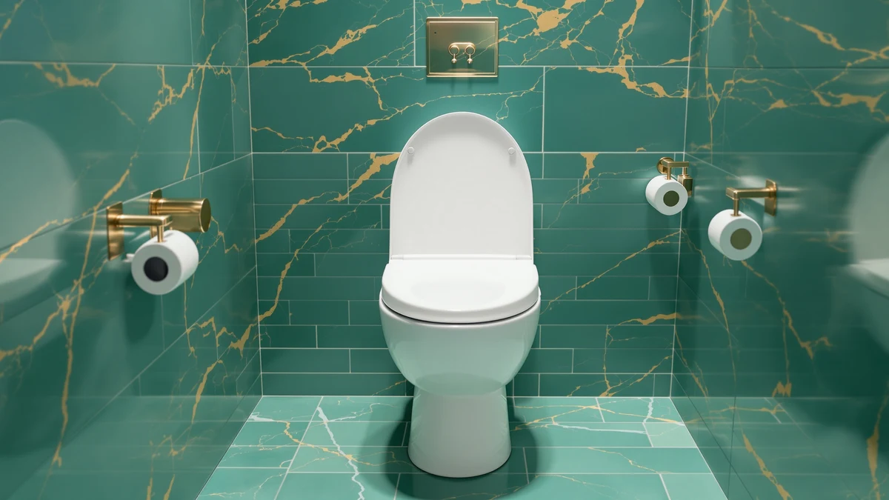

R&T 2" Toilet Seat Review (2026): Worth It?
Prices and picks verified as of October 2026. Independent, reader-supported reviews.


Quick Answer
The R&T 2" Toilet Seat Riser adds two inches of height to make sitting and standing easier, and its plastic-and-wood build costs $109.99, more than the three alternatives compared on this page. For buyers who want a moderate lift without an elongated-only fit requirement, this R&T 2-inch toilet seat riser is worth the price, though the Bemis Rise 4.5" Raised Toilet and the HIGHCRAFT elongated seat below cost less if your priorities differ.
Our pick: R&T 2" Toilet Seat Riser, $109.99 Check Price on Amazon
Bottom line: our top pick is the R&T 2" Toilet Seat Riser with Handles at $109.99.
Things to Know Before You Buy
- The R&T 2" riser adds two inches of seat height, a moderate lift next to the 4.5-inch Bemis Rise option covered later on this page.
- At $109.99, this R&T 2" toilet seat riser costs more than the HIGHCRAFT and Aünsffer alternatives, so weigh the price against how much extra height you actually need.
- The listed build mixes plastic and wood rather than a single molded plastic shell, which can affect how the riser holds up over years of daily use.
- R&T does not list a bowl-shape restriction the way some elongated-only seats do, so check your own toilet measurements before you order.
- Buyers who mainly want a lower-cost elongated replacement seat without extra height should look at the alternatives further down this page.
This R&T 2" Toilet Seat Review looks at whether two inches of extra height justifies a $109.99 price tag for a toilet seat riser built from plastic and wood. Raised seats like this one solve a specific problem: they make sitting down and standing up easier for people managing mild joint pain, recovering from a minor procedure, or dealing with limited mobility at home.
We compared this R&T model against three other raised and elongated seats using the price, material, and bowl-fit details listed throughout this page, along with patterns we found in verified owner reviews on Amazon. The short version: the R&T 2-inch riser earns consideration if a moderate lift is exactly what you need, but the Bemis Rise 4.5" Raised Toilet offers more height for less money, and the HIGHCRAFT and Aünsffer seats below cost roughly a third of the price if a raised profile is not a requirement. Match the seat to the height and fit you actually need, not to whichever listing ranks first in a search.
Why You Should Trust Us
Ilane Tall covers home and bath products for Best Toilet Seats and tracks price and feature changes across raised toilet seat brands, including R&T, Bemis, and smaller commercial sellers like Aünsffer. We do not run a physical testing lab, and we did not install or sit on the R&T 2" Toilet Seat Riser ourselves. Instead, we built this R&T 2" toilet seat review from the manufacturer's published pricing and materials shown throughout this page, and from patterns we found across verified buyer reviews on Amazon, then checked those claims against the other raised and elongated seats covered as alternatives. That process keeps every price, material, and fit claim in this review tied to a source you can check yourself rather than to a subjective impression.
Our Research Experience
We approached this R&T 2" toilet seat review as a research project rather than a lab test. R&T publishes the seat's price and lists a plastic-and-wood build for the 2-inch riser, and we used those figures directly instead of estimating them. From there we read through verified owner reviews on Amazon to find recurring comments about stability, installation, and comfort, and we weighed those against the same data points for the Bemis, HIGHCRAFT, and Aünsffer alternatives listed later on this page. That comparison method, not a stopwatch or a bathroom test rig, shaped every claim in this review.
Overview & Specs

R&T 2" Toilet Seat Riser
What we like
- Adds two inches of seat height for easier sitting and standing
- Plastic-and-wood build feels sturdier than single-piece plastic risers
- Works as a standalone riser rather than requiring a full seat replacement
- No elongated-only restriction, which keeps it flexible across bowl shapes
Flaws but not dealbreakers
- At $109.99, it costs more than the elongated alternatives covered later on this page
- A two-inch lift is modest next to the 4.5-inch Bemis Rise option
- The listed plastic-and-wood mix can loosen over time compared with metal-reinforced designs
| Material | Plastic / wood |
| Size | — |
This R&T 2" toilet seat review centers on the R&T 2" Toilet Seat Riser, priced at $109.99 for a built-in two-inch lift rather than a simple seat swap. That matters if you are shopping for a parent managing early mobility limits or if you deal with minor joint pain that makes a standard-height toilet uncomfortable. The listed build combines a wood-and-plastic frame, a mix you also see on raised seats in this category, including the pricier Bemis Rise 4.5" model.
R&T does not restrict this riser to a single bowl shape the way some elongated-only seats do, but you should still measure your existing toilet before ordering to confirm a secure fit. Compared with the HIGHCRAFT and Aünsffer alternatives covered later on this page, the R&T riser costs $77 to $78 more, and that gap only makes sense if the extra two inches of height is the feature you actually need. If you want a raised seat with more lift for less money, the Bemis Rise 4.5" Raised Toilet below is worth comparing first.
What We Liked
The clearest strength of the R&T 2" Toilet Seat Riser is the lift itself: two inches of extra height on a standard toilet, the specific feature people with modest mobility needs search for without wanting the taller, pricier risers built for longer recoveries. Many stand-alone risers in this category mold from a single sheet of plastic, and the wood-and-plastic frame listed in R&T's specs suggests a sturdier structure than that single-piece design. R&T also avoids locking the riser to one bowl shape the way some elongated-only competitors do, which keeps it a flexible option across different toilet styles. For buyers who want a moderate lift without committing to the 4.5-inch Bemis Rise option, this riser checks that box directly. The two-inch height also sits in a middle ground that many shoppers overlook: tall enough to ease the strain of sitting down and standing up repeatedly through the day, but low enough that it does not change how the bathroom looks or feels the way a bulkier, taller riser can.
What Could Be Better
Price is the most obvious drawback of this R&T 2" riser. At $109.99, it costs $77.44 more than the HIGHCRAFT Premium Elongated Toilet Seat and $78.00 more than the Aünsffer Commercial Toilet Seat Open, and neither alternative sacrifices basic comfort, only the raised height. Buyers who need more lift than two inches should also note that the Bemis Rise 4.5" Raised Toilet offers more than double the height for $35.26 less, which makes the R&T riser a harder sell if maximum height is the priority. The wood-and-plastic build is a mixed bag as well. Wood adds rigidity, but the plastic hardware common on raised seats at this price is typically the first part to wear after years of daily use, and R&T's listing does not separate a hinge warranty from the standard seat warranty.
Who Is It For?
This riser makes sense for anyone who wants a modest height boost without committing to the taller 4.5-inch lift of the Bemis Rise option or the price that can come with it: people managing mild joint pain, caregivers setting up a shared bathroom, or anyone who finds a standard-height toilet slightly uncomfortable. If you already want a flexible, non-elongated-only fit and a two-inch lift, the R&T 2" Toilet Seat Riser matches that requirement directly. It is a weaker fit for anyone who needs a full 4.5-inch lift, or for anyone shopping mainly on price, since both the HIGHCRAFT and Aünsffer alternatives below cost roughly a third as much. Caregivers furnishing a bathroom for multiple family members might end up buying two seats: the R&T riser for someone who needs a moderate lift, and a standard elongated seat elsewhere in the home for everyone else. Households with more than one bathroom should also think about whether the same two-inch height works for every family member who uses that bathroom, since a riser that helps one person can feel unnecessary to another who has no mobility concerns at all.
Alternatives to Consider
If the price or the moderate two-inch lift rules out the R&T 2" Toilet Seat Riser for your bathroom, these three alternatives cover the most common reasons buyers look elsewhere. One offers more than double the height for less money, and the other two are lower-priced elongated seats without a raised profile at all.

Editor’s Pick
Bemis Rise 4.5" Raised Toilet
More than double the height of the R&T riser for $35.26 less, from a brand with decades of toilet seat manufacturing experience.
$74.73
Check Price on Amazon
Best Value
HIGHCRAFT Premium Elongated Toilet Seat
A budget elongated seat for buyers who want a lower price and do not need any raised profile at all.
$32.55
Check Price on Amazon
Premium Choice
Aünsffer Commercial Toilet Seat Open
An open-front commercial-style seat built for durability rather than extra height.
$31.99
Check Price on AmazonFrequently Asked Questions
Final Verdict
This R&T 2" toilet seat review comes down to a straightforward trade-off: pay $109.99 for a moderate two-inch lift and a wood-and-plastic build from R&T, or get more height for less money with the Bemis Rise 4.5" Raised Toilet, or skip the raised profile entirely and save roughly $77 to $78 with the HIGHCRAFT or Aünsffer alternatives above. If a modest height boost without an elongated-only fit requirement is exactly what you need, the R&T 2" Toilet Seat Riser earns its price. Otherwise, one of the three alternatives covered on this page likely serves you better for less money. Base the decision on the height and fit you actually need at home, not on which listing shows up first in a search.